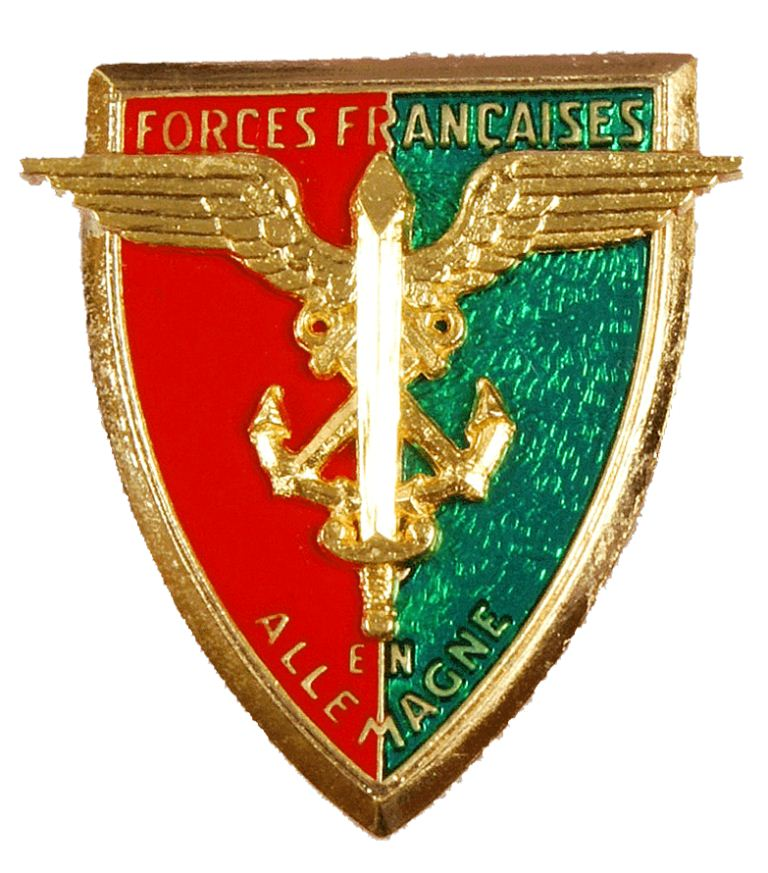
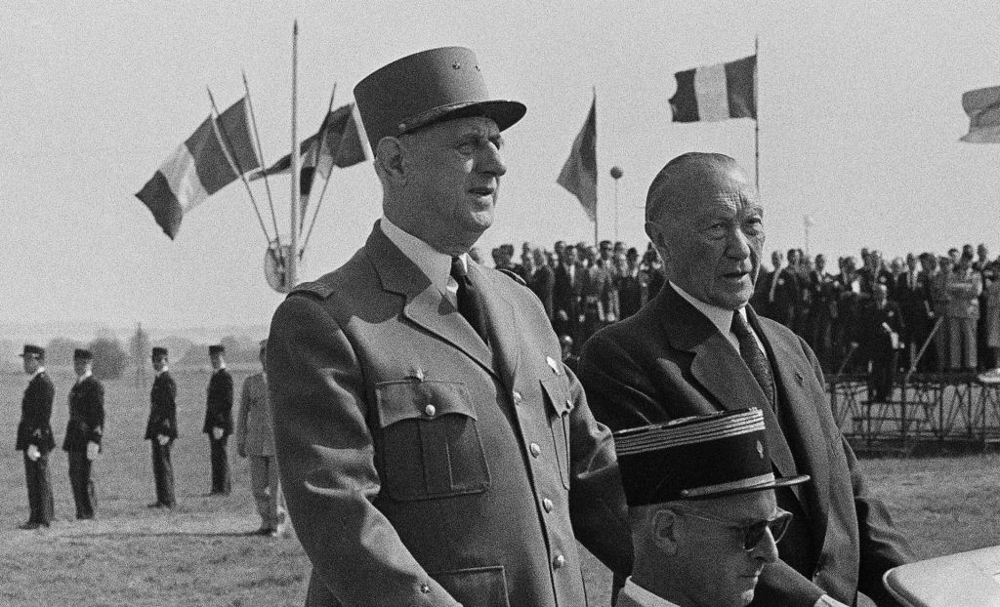
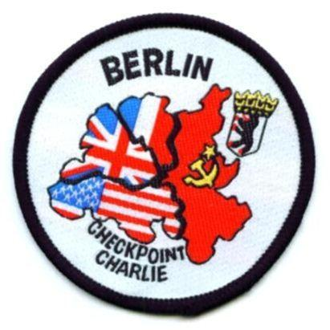
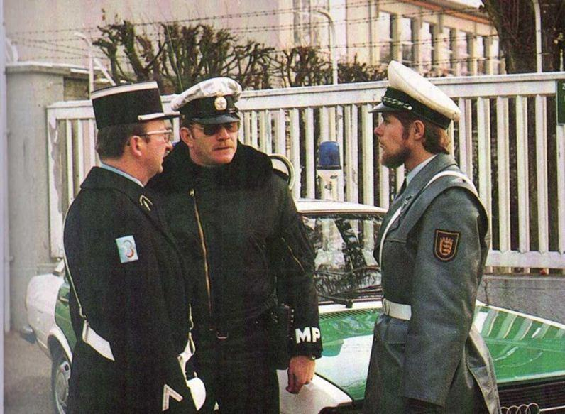
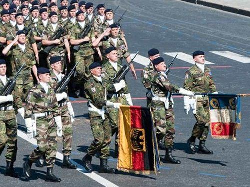

Le traité de 1963 relatif à la coopération franco-allemande intensifia également la coopération des armées des deux pays. Il s'ensuivit des manifestations sportives communes, des jumelages, un échange régulier entre les officiers et les sous-officiers français et allemands et des exercices communs. En 1986, la 1ère Division Blindée de l’armée française participa pour la première fois à une manœuvre allemande. Quelques années plus tard une restructuration profonde des éléments français en Allemagne eut lieu dès 1991 à l’issue de la réunification de l'Allemagne. Le 2ème Corps d Armée, dont l'état-major se trouvait à Baden-Baden, placé sous l'autorité du commandant en chef des forces françaises en Allemagne, fut dissous en 1993. Les forces françaises en Allemagne (F.F.A.) devinrent les forces françaises stationnées en Allemagne (F.F.S.A.). Dans la même année, l'état-major de la 1ère Division Blindée fut transféré de Landau à Baden-Baden, où il fusionna avec l'état-major des FFSA. En 1999, l'état-major des FFSA-1ère Division Blindée et le 5°Régiment de commandement et de soutien furent dissous. Après la dissolution du 110ème régiment d’Infanterie de Donaueschingen ne subsistent aujourd’hui plus que quelques Français au sein de l’Etat-major mixte de la Brigade Franco Allemande comme garant de la coopération militaire bilatérale sur le sol allemand.
Les anniversaires du traité de l’Elysée sont l’occasion de mettre de nombreuses institutions et organisations bilatérales à l’honneur, mais omettent singulièrement le rôle incontournable joué par les membres des forces armées françaises et leurs familles dans cette coopération. Le peu d’attention que l’on prêtait à la présence des militaires en tant que tel au sein de la communauté allemande, méritent d’être mis en exergue. Faut-il rappeler que les premiers contacts franco-allemands d’après guerre sont ceux initiés par les autorités militaires françaises et l’administration civile près des Forces ! Au fils des ans, et par la force des choses, les relations avaient évolués de façon notoire.
De forces d’occupation les forces françaises devinrent forces de stationnement. Dans ce contexte mémoriel il me semble indispensable d’attirer l’attention sur un autre discours, moins connu, mais dont l’importance est au moins égale à celui adressé à la jeunesse allemande de Ludwigsburg par le Général de Gaulle.
En effet le 7 septembre 1962, soit 17 ans après la fin de la seconde guerre mondiale, le chef de la France Libre s’adresse à Hambourg, et dans sa tenue de Général, aux officiers de l'école de guerre allemande dans les termes suivants :
Mon premier mot sera pour vous dire que je me fais un honneur et un plaisir de vous voir. Entre soldats - que nous sommes- il y a de tous temps, en dépit des frontières et quelles qu'aient été les blessures, un grand et noble domaine commun. Cela est vrai du point de vue de la technique militaire. Mais cela est vrai surtout moralement parlant. Car toujours et où que ce soit, le service sous les armes ne peut aller sans une vertu, au sens latin du mot « virtus », qui distingue et élève les hommes et qui, lors même qu'ils se sont combattus, les marque tous d'une seule et même empreinte. C'est pourquoi et de toute façon, le Général de Gaulle aurait bien volontiers rendu visite aux bons officiers que vous êtes.
Mais il apprécie d'autant plus la rencontre, qu'elle a lieu en un temps où, entre l'Allemagne et la France et, par là même, entre leurs armées, les rapports historiques changent du tout au tout. Après des guerres sans cesse renouvelées, notamment depuis deux cents ans, guerres dans lesquelles chacun des deux peuples visait à dominer l'autre et où tous deux ont prodigué une somme immense de courage, de sang, de richesses, sans même, qu'en fin de compte, la limite entre leurs territoires en ait été sensiblement modifiée, voici qu'ils ont pris conscience de l'absurdité du duel. Voici aussi que se dresse une colossale menace mondiale et que l'alliance atlantique qui s'est formée pour la contenir ne vaut que si les Français et les Allemands sont d'accord sur les deux rives du Rhin.
Voici, enfin, que le mouvement général du monde leur fait voir qu'ils se trouvent, à tous égards, complémentaires et qu'en conjuguant ce qu'ils sont, ce qu'ils ont et ce qu'ils valent, ils peuvent constituer la base d'une Europe, dont la prospérité, la puissance, le prestige, égaleraient ceux de qui que ce soit. Mais, dans cette union franco-allemande que tout nous commande d'édifier, pour combien peut et doit compter la solidarité de nos armes !
C'est le fait des Français et c'est le fait des Allemands qu'ils n'ont jamais rien accompli de grand, au point de vue national ou au point de vue international, sans que, chez les uns et chez les autres, la chose militaire y ait éminemment participé. En raison de notre nature propre aussi bien que du commun danger, la coopération organique de nos armées en vue d'une seule et même défense est donc essentielle à l'union de nos deux pays.
Après tout, comme l'écrivait votre Zuckmayer: « War es gestern unsere Pflicht Feinde zu sein, Ist es heute unser Recht Brüder zu werden. ». D'ailleurs, si les soldats allemands et les soldats français y sont désormais déterminés par les impératifs de leur sécurité nationale et par l'estime réciproque qu'ils se portent, d'autre part et comme tout se tient, les nécessités modernes de la force et de l'art militaire ne manquent pas de les y pousser. L'armement, dans sa conception et dans sa réalisation, exige maintenant, pour être valable- qui ne le sait mieux que vous ?- la mise en œuvre de ressources et de capacités, scientifiques, techniques, industrielles, financières, dont les limites s'élargissent tous les jours.
La France et l'Allemagne pourront d'autant mieux s'assurer des moyens de la puissance qu'elles conjugueront leurs possibilités. A fortiori sera-ce vrai, si celles de leurs voisins d'Europe s'associent avec les leurs.
Je me félicite, Messieurs, d'avoir pu prendre contact avec vous, d'avoir livré quelque matière à vos réflexions, surtout d'avoir marqué ici, comment et pourquoi, en vertu d'une extraordinaire révolution, la raison et le sentiment engagent désormais la France, l'Allemagne et leurs armées dans la voie de l'union et de l'amitié. Messieurs, j'ai l'honneur de vous saluer. »
La coopération militaire avait été évoquée dès les premières rencontres entre le Général et le Chancelier Adenauer. Aussi, afin d’aboutir à des conceptions stratégiques communes, des dispositions particulières ont été établies dans le Titre I/3 a.b et II/ B du Traité de l’Elysée concernant les objectifs à poursuivre dans le domaine de la Défense. Dès lors naît une longue coopération militaire qui se développera, tout particulièrement, grâce à la présence militaire française existante en Allemagne tout au long de ces cinquante dernières années.
En effet, compte tenu de leur implantation au sein de la population allemande, les FFAKecker Spatz étaient le meilleur vecteur à même de relayer et de concrétiser, sur le plan militaire et civil, ce grand projet. Au fil des années, toutes les occasions de rapprochement sont recherchées, que ce soit à travers d’exercices communs, de visites ou d’échanges entre unités françaises et allemandes.
Les jumelages de formations où de grandes unités se multiplient : 65 entre 1965 et 1990. Dès le début des années 70, sont mis sur pied des challenges militaro-sportifs visant la recherche de la solidarité par l’effort partagé où s’affrontent, en toute cordialité, des unités mixtes de jeunes soldats allemands et français.
Que ce soit au niveau des régiments ou des divisions, de grands exercices se développent où les uns et les autres se familiarisent avec les procédures du voisin, apprécient l’originalité de son savoir-faire et surtout apprennent à mieux se connaître. Un effort supplémentaire est fait dans le domaine de l’apprentissage de la langue du partenaire, par des tests écrits organisés par les commandements locaux et par la Direction de l’Enseignement Français en Allemagne qui a en charge la scolarisation des enfants des militaires se trouvant sur le territoire allemand.
L’impulsion première donnée, par Charles de Gaulle et Konrad Adenauer, perdurait et les autres chefs d’État poursuivaient l’œuvre menée, témoignent pour n’en citer que quelques unes : la visite du président Giscard d’Estaing qui, en 1979, reçoit le chancelier Schmidt à Baden-Baden, la visite du Président fédéral Carstens en 1983 au camp de Münsingen, celle du président Mitterrand qui reçoit le chancelier Kohl toujours à Baden-Baden en 1986 (ces deux hommes d’État se sont liés d’amitié et manifestent tout particulièrement l’intérêt qu’ils portent à l’entraînement opérationnel). Les 47ème consultations franco-allemandes de 1986 à Paris, furent l’occasion de décider de l’instauration d’une formation commune des officiers ainsi que la mise en place de manœuvres conjointes. En 1987 fut organisé l’exercice « Kecker Spatz2 », au cours duquel les deux chefs d’État se rencontrent symboliquement sur un pont flottant lancé sur le Danube par un régiment du génie :
« Outre le fait que l’exercice Moineau hardi revêt une importance particulière en matière de politique militaire, il a atteint son objectif principal, à savoir, apporter la preuve que les armées allemande et française sont en mesure de coopérer avec efficacité. La qualité de la préparation, la camaraderie et la confiance réciproque qui ont marqué cet exercice ne doivent pas nous faire oublier qu’il nous faudra encore des efforts considérables avant d’obtenir la pleine interopérabilité. Il s’agit notamment de faire disparaître la barrière des langues. Trouver une solution à ce problème est la condition préalable au succès de la coopération. »
Lors du sommet franco-allemand de Karlsruhe, les 12 et 13 novembre 1987, il fut décidé de la mise sur pied d’une grande unité terrestre mixte (brigade franco-allemande), complétée par la création d’un conseil franco-allemand de défense3 et de sécurité dont le rôle est de promouvoir les questions de défense et d’organiser la coopération des deux États en la matière afin d’en optimiser les résultats.
Le vingtième cinquième anniversaire du traité de l’Élysée donna l’occasion de signer le protocole, annexé au traité de l’Élysée portant création du Conseil Franco Allemand de Défense et de Sécurité.
Outre le jumelage du 2ème Corps d’Armée français avec le II Korps allemand, fut créé le « challenge de l’amitié » dont l’objectif était de promouvoir l’amitié et la solidarité entre jeunes soldats français et allemands. S’ensuivit la manœuvre « Champagne 89 » qui fut l’occasion pour une brigade allemande de prendre part, pour la première fois depuis la fin de la deuxième Guerre Mondiale, à un exercice en terrain libre en France en coopération avec le 1er Corps d’Armée français. Néanmoins, un bouleversement politique majeur va considérablement changer et faire évoluer les relations entre la France et la RFA dans le domaine de la coopération militaire.
1990-1999 : Le retrait progressif des forces françaises en Allemagne après la réunification allemande.
Confronté à une situation politique catastrophique, le système soviétique s’effondre, entraînant derrière lui l’éclatement du pacte de Varsovie. Le mur de Berlin est détruit, l’Allemagne réunifiée. La menace venant de l’Est disparaissant, la France décide de diminuer son dispositif militaire en Allemagne. En effet, cette décision traduit la volonté de la France d’adapter son effort de défense au nouveau contexte international.
Il est donc décidé, en accord avec le gouvernement fédéral allemand, que les forces françaises se retireront progressivement du sol allemand. C’est d’abord la 3ème Division Blindée de la Zone Sud, ayant son état-major à Fribourg en Brisgau, qui est dissoute dès 1991. En 1992, c’est le tour de la 5ème Division Blindée de Landau de la Zone Centre. Ce sont alors les éléments organiques du 2ème Corps d’Armée et son État-major, en place à Baden-Baden, qui cessent d’exister. Une page d’histoire militaire franco-allemande semble alors se tourner complètement.
Mais au même moment est mis en place l’embryon d’un outil de défense européen commun, le Corps franco-allemand4. A ses débuts, il se compose des éléments de la 1ère division blindée Française et de la 10ème division blindée Allemande. Bien que demeurant sous commandement national elles furent subordonnées au Corps européen dès la décision d’emploi prise par les gouvernements.
La mise à disposition opérationnelle du Corps fut prévue pour le 1er octobre 1995. Comme c’était le cas pour la Brigade franco-allemande, les fonctions clés du commandement seront assurées alternativement par les nations participant au corps.
Le premier Général, commandant le Corps européen, sera allemand. Ce Corps franco-allemand devint bientôt européen et fut désigné par la France et l’Allemagne comme « Force relevant de l’UEO5 » capable de remplir les missions de Petersberg6, définies le 19 juin 1992 :
comme des missions humanitaires et d’évacuation,
des missions de maintien de paix et de force de combat pour la gestion de crises y compris les missions de rétablissement de la paix marquant un approfondissement de la participation de l’Eurocorps à sa mission de défense.
Le siège de cette entité fut établi à Strasbourg. Les autorités françaises, en concertation avec leurs homologues allemands, arrêtent que la première Division Blindée, et les services nécessaires à son fonctionnement, demeureront stationnés en Allemagne. Aussi, pour affirmer le changement fondamental dans sa nature juridique et politique, les forces françaises deviennent F.F.S.A. Le nouvel insigne adopté, tout en traduisant la filiation avec le 2ème CA7, symbolise bien sa nouvelle raison d’être (couleurs franco-allemandes sur fond étoilé européen). Son Quartier Général est à Baden-Baden et un certain nombre de villes allemandes offrent aux autres unités françaises de nouvelles implantations. Jusqu’en 1993, on pouvait chiffrer en Allemagne environ 100 000 personnes civiles et militaires. En 1996, dans le cadre du resserrement du format de l’armée de terre, le retrait des FFSA8 est décidé au printemps 1996, à l’exception des formations de la Brigade franco-allemande et du 16ème Groupement de Chasseurs de Saarburg. Il s’effectuera en 1997 puis en 1999.
Un concept commun franco-allemand, adopté au Sommet franco-allemand de Nüremberg en décembre 1996, constitua la charte de l’ensemble de la coopération en matière de sécurité. Il en indiquait les fondements, le contenu et les perspectives conjointes. Fruit d’une démarche courageuse, inédite depuis la conclusion du traité de l’Élysée en 1963, le document établit les conceptions que la France et l’Allemagne partagent et qu’elles sont résolues à mettre en œuvre. On y trouve la réaffirmation de la communauté de destin et d’intérêts qui lie les deux pays. Le concept commun reconnaît le caractère de plus en plus inséparable des intérêts de sécurité. Il définit une vision commune des risques auxquels sont exposés les deux pays et du cadre européen et atlantique, dans lequel doit s’inscrire leur action commune.
Le concept consacre la convergence des visions franco-allemandes quant au rôle et aux missions des forces armées dans le nouvel environnement stratégique. En particulier, les analyses de la France et de l’Allemagne s’accordent sur l’appréciation des fonctions opérationnelles majeures que sont la dissuasion, la prévention, la protection et la projection. Le concept commun prévoit un développement significatif de notre coopération militaire. Ses directives en la matière devront être régulièrement précisées et enrichies, ce qui vaut en particulier pour l’élaboration à terme d’une planification commune des besoins et des équipements militaires correspondants. Il fournit ainsi un socle ambitieux et durable à la poursuite de la relation bilatérale. C’est désormais de ce concept commun que tout devait procéder dans les relations stratégiques et militaires franco-allemandes. La coopération franco-allemande est donc bien un élément majeur à la construction de l’Europe de la défense, et ce dans bon nombre de domaines.
Néanmoins, l’année 1999 voit la plupart des unités françaises rapatriées, soit dissoutes. Les FFSA9 et la 1ère DB10 quittent l’Allemagne après 56 ans de bons et loyaux services. Et comme le Président fédéral M. Roman Herzog aimait à le préciser lors de sa visite officielle auprès des troupes françaises en 1999, la présence depuis la fin de la guerre de ces « 3 millions de Français ont été le mastic de l’amitié franco-allemande » et pour le professeur Bender de l’Université de Trèves :
« Le retrait définitif des troupes françaises de l’Allemagne du Sud-Ouest a entraîné une césure profonde et problématique pour les relations franco-allemandes, car au cours des cinquante quatre années passées, les FFA11 sont devenues un élément continu, bien vite positif des relations franco-allemandes, un pont large et solide entre les deux peuples. […] Le vide qu’a laissé le départ des troupes sera ressenti très douloureusement.12 »
Ne subsiste aujourd’hui en Allemagne que quelques éléments Français de Bataillon de commandement et des services de la Brigade franco-allemande, après le retrait, en 2010, du 16ème Groupe de chasseurs après 42 ans de présence en Allemagne et dernièrement celui du 110ème régiment d’Infanterie !
Cette cohabitation, de plus de quarante années, a généré de multiples mariages franco-allemand, et des milliers de naissances de petits français nés en Allemagne. Durant toutes ces décennies de présence militaire et civile française en Allemagne les enfants issus de ces hymens sont devenus d’ardents militants de la coopération bilatérale et de l’amitié entre nos deux peuples. Une des nombreuses conséquences heureuses de cette coopération de terrain furent la création des associations franco-allemandes.
L’engagement personnel est significatif des militaires français, des personnels civils et de leurs familles, au rapprochement franco-allemand se devait d’être loué.
A.W.
1Forces Françaises en Allemagne
2Moineau hardi
3Voir texte en annexe
4L'Eurocorps a été créé lors du 59ème sommet franco-allemand de La Rochelle, les 21 et 22 mai 1992. Depuis, trois autres États y ont adhéré : la Belgique (25 juin 1993), l'Espagne (10 décembre 1993) et le Luxembourg (7 mai 1996). Il comprend 50 000 hommes et est opérationnel depuis le 30 novembre 1995 (à l'issue de l'exercice PEGASUS-95).
L'Eurocorps s'inscrit dans le cadre des « Forces relevant de l'Union de l'Europe occidentale » (FRUEO). Il peut intervenir en tant que tel dans le cadre de l'UEO (article V) ou de l'OTAN (article 5), et être mobilisé pour des missions humanitaires, d'évacuation de ressortissants, d'opérations de rétablissement ou de maintien de la paix, sous l'égide des Nations Unies ou de l'OSCE. L'engagement de l'Eurocorps sous le contrôle politique de l'UEO a fait l'objet d'un accord conclu le 24 septembre 1993 et celui sous l'autorité de l'OTAN a été codifié par l'accord du 21 janvier 1993.
5Fondée en 1948 par le traité de Bruxelles, l'UEO est une organisation européenne de coopération pour la défense et la sécurité. Elle est constituée par 28 pays ayant quatre statuts différents: États membres, membres associés, observateurs et partenaires associés. Ont le statut d'États membres, les pays de l'Union européenne sauf le Danemark, l'Irlande, l'Autriche, la Finlande, et la Suède qui ont un statut d'observateurs. Les six membres associés sont la Hongrie, l'Islande, la Norvège, la Pologne, la République tchèque et la Turquie. Enfin, les sept partenaires associés sont la Bulgarie, l'Estonie, la Lettonie, la Lituanie, la Slovénie, la Slovaquie et la Roumanie.
Le traité d'Amsterdam a élevé l'UEO au rang de partie intégrante du développement de l'Union puisque cette organisation lui confère une capacité opérationnelle dans le domaine de la défense. En effet, l'UEO a joué un rôle important dans la mise en place des premières missions de Petersberg, comme le détachement de police à Mostar ou la coopération avec la police en Albanie. Cependant, aujourd'hui, ce rôle semble être abandonné en faveur du développement des structures et des capacités propres de l'Union dans le cadre de la politique européenne de sécurité et de défense (PESD). En témoignent le transfert des capacités opérationnelles de l'UEO à l'Union. À ce titre, les organes subsidiaires de l'UEO, l'Institut d'études de sécurité et le Centre satellitaire ont quitté le cadre de l'Organisation le 1er janvier 2002 et sont devenus des agences de l'Union. De plus, le traité de Nice a supprimé certaines dispositions du traité sur l'Union européenne concernant les relations entre l'UEO et l'Union. Ainsi, la compétence principale qui reste au sein de l'UEO concerne l'article V - la défense collective - et son transfert à l'échelle européenne semble reporté.
6Les missions de Petersberg ont été instituées en juin 1992 lors du conseil ministériel de l'Union de l'Europe occidentale (UEO) qui s'est tenu à l'hôtel de Petersberg, non loin de Bonn. À cette occasion, les États membres de l'UEO se sont déclarés prêts à mettre à la disposition de l'UEO des unités militaires provenant de tout l'éventail de leurs forces conventionnelles en vue de missions militaires qui seraient menées sous l'autorité de l'UEO. Les différents types de missions militaires pouvant incomber à l'UEO ont été définis: outre une contribution à la défense collective dans le cadre de l'application de l'article 5 du Traité de Washington et de l'article V du Traité de Bruxelles modifié, les unités militaires des États membres de l'UEO peuvent être utilisées pour : des missions humanitaires ou d'évacuation de ressortissants ; des missions de maintien de la paix ; des missions de force de combats pour la gestion des crises, y compris des opérations de rétablissement de la paix.
Ces missions sont aujourd'hui expressément incluses dans l'article 17 du traité sur l'Union européenne et font partie intégrante de la politique européenne de sécurité et de défense (PESD).
Partager cette page